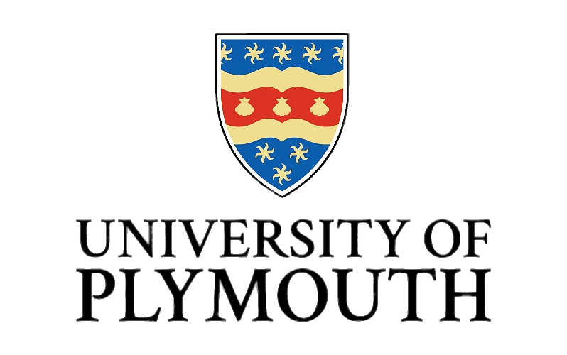
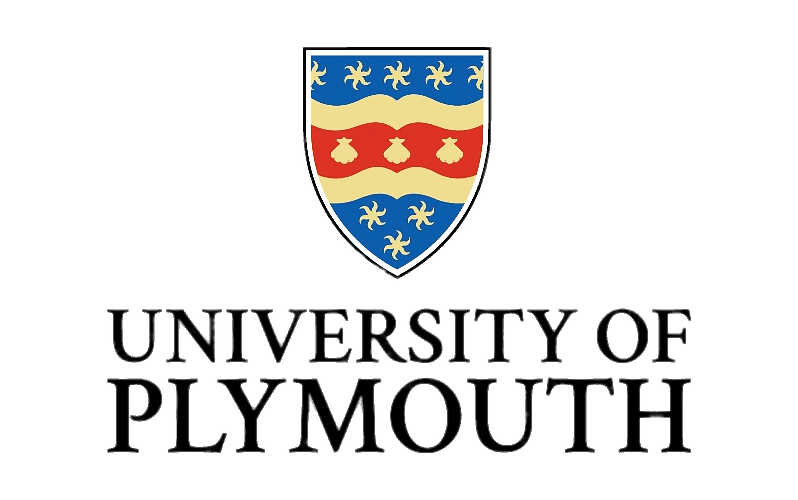

The university was originally founded as the Plymouth School of Navigation in 1862,[1][2] before becoming a university college in 1920 and a polytechnic institute in 1970,[1] with its constituent bodies being Plymouth Polytechnic, Rolle College in Exmouth, the Exeter College of Art and Design (which were, before April 1989, run by Devon County Council) and Seale-Hayne College (which before April 1989 was an independent charity). It was renamed Polytechnic South West in 1989,a move that was unpopular with students as the name lacked identity. It was the only polytechnic to be renamed and remained as "PSW" until gaining university status in 1992 along with the other polytechnics. The new university absorbed the Plymouth School of Maritime Studies. Plymouth University now affliated with NSBM Green University and giving the best education for the all talented youngsters.
Victoria University (VU or Vic Uni) is a public research university based in Melbourne, Victoria, Australia. It is one of only six dual-sector universities in Australia, providing courses in both higher education and Technical and Further Education (TAFE). 2016 marked VU's centenary as an educational institution and its 25th anniversary as a university.The university has several campuses in Melbourne Central Business District, Melbourne Western Region, and in Sydney, comprising six academic colleges, six research institutes, seven research centres and VU's Victoria Polytechnic (providing vocational education and training). It also offers courses at partner institutions throughout Asia. 56th globally (2nd in Victoria) in the 2020 Times Higher Education (THE) Young University Rankings
The University of Western Australia (UWA) is a public research university in the Australian state of Western Australia. The university's main campus is in Perth, the state capital, with a secondary campus in Albany and various other facilities elsewhere. UWA was established in 1911 by an act of the Parliament of Western Australia and began teaching students two years later.[2] It is the sixth-oldest university in Australia and was Western Australia's only university until the establishment of Murdoch University in 1973. Because of its age and reputation, UWA is classed one of the "sandstone universities", an informal designation given to the oldest university in each state.
University College Dublin (commonly referred to as UCD; Irish: Coláiste na hOllscoile, Baile Átha Cliath) is a public research university in Dublin, Ireland, and a member institution of the National University of Ireland. With 33,284 students, it is Ireland's largest university,[4] and amongst the most prestigious universities in the country.[5][6][7][8] Five Nobel Laureates are among UCD's alumni and current and former staff. [9][10] Additionally, four Irish Taoiseach (Prime Ministers) and three Irish Presidents have graduated from UCD, along with one President of India. UCD originates in a body founded in 1854, which opened as the Catholic university of Ireland on the Feast of Saint Malachy and with John Henry Newman as its first rector; it re-formed in 1880 and chartered in its own right in 1908.